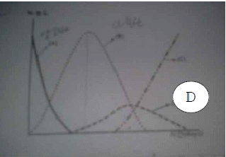
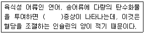

수산양식기사 (2012-08-26 기출문제)
1과목: 어류양식학
1. 다음 중 실뱀장어를 기를 때의 유지 수온으로 가장 적합한 것은?
- 12 ~ 13 ℃
- 15 ~ 16 ℃
- 20 ~ 22 ℃
- 28 ~ 30 ℃
(정답률: 68%)

2. 다음 중 방어의 성장 최적수온으로 가장 적합한 것은?
- 8 ~ 12 ℃
- 13 ~ 18 ℃
- 18 ~ 25 ℃
- 28 ~ 32 ℃
(정답률: 73%)
3. 금붕어의 선별 기준으로 가장 거리가 먼 것은?
- 몸길이와 체고
- 각 지느러미의 모양
- 비늘의 투명성과 불투명성
- 눈의 크기
(정답률: 91%)
4. 어류 유생 사육에 필요한 먹이생물인 로티퍼(rotifer)의 배양과 먹이공급 방법에 대한 내용 중 적합하지 않은 것은?
- 빵효모가 먹이인 경우 로티퍼 100만 개체당 1g을 매일 2 ~ 3회 나누어 공급한다.
- 빵효모로 로티퍼를 배양할 경우 채취한 즉시 유생의 먹이로 사용한다.
- L type 로티퍼(130 ~ 340 ㎛)는 수온을 20 ~ 25℃로 배양한다.
- S type 로티퍼(100 ~ 210 ㎛)는 수온을 25~ 30℃로 배양한다.
(정답률: 95%)
5. 이스라엘 잉어(향어)가 우리나라에 도입된 시기는?
- 1942 년
- 1955 년
- 1965 년
- 1973 년
(정답률: 85%)
6. 넙치의 자연산란 수온범위는?
- 8 ~ 10 ℃
- 11 ~ 17℃
- 18 ~ 22 ℃
- 23 ~ 25℃
(정답률: 74%)
7. 다음 중 사육 수조의 수심을 1 ~ 1.5 m 정도로 하여 조피볼락의 자어를 사육 할 때 가장 적합한 수조의 표층 조도는?
- 50 lux 이하
- 50 ~ 100 lux
- 100 ~ 200 lux
- 200 ~ 500 lux
(정답률: 80%)
8. 양성한 넙치 친어로부터 채란하고자 할 때 다음 중 친어의 수용밀도가 가장 적당한 것은?
- 1 m2 당 1 ~ 2마리
- 1 m2 당 3 ~ 4마리
- 1 m2 당 5 ~ 6마리
- 1 m2 당 7 ~ 8마리
(정답률: 89%)
9. 어떤 어류의 체중이 200g 이였던 것을 600g 되도록 기르는데 소요된 사료양이 800g 이었다면 사료계수는?
- 1.5
- 1
- 1.5
- 2
(정답률: 92%)
10. 참돔의 부화, 자어 및 치어의 사육에 대한 설명으로 틀린 것은?
- 부화는 12 ~ 23℃에서 가능하고, 부화 최적 수온은 13 ~ 14 ℃이다.
- 수정란은 20℃ 전후에서 약 45시간 만에 부화하여 2.0 ~ 2.3㎜ 의 자어로 된다.
- 알은 비중이 1.0245 이므로 알이 가라앉지 않도록 해수의 비중이 그 이상으로 되게 한다.
- 부화 후 3 ~ 4일이 지나면 첫 먹이를 준다.
(정답률: 52%)
11. 무지개 송어 식용어 양성을 위한 먹이 공급에 대한 설명 중 틀린 것은?
- 1 일분의 먹이를 1 회에 한꺼번에 주지 않고 2회로 나누어 준다.
- 먹이가 바닥에 떨어지기 전에 다 받아먹을 수 있는 정도로 천천히 조금씩 준다.
- 100% 충분히 먹었을 때 사료의 효율이 가장 높다.
- 수온이 갑자기 너무 높아지거나 너무 낮아졌을 때는 먹이 주는 양을 감소기켜야 한다.
(정답률: 88%)
12. 1일 적정공급량의 먹이를 소량씩 여러 번에 나누어서 공급해 주어야 하는 어류로 가장 적합한 것은?
- 잉어
- 뱀장어
- 무지개 송어
- 방어
(정답률: 83%)
13. 뱀장어(참장어)에 대한 설명으로 틀린 것은?
- Leptocephalus를 잡아서 기른다.
- 어미 한 마리는 700 ~ 1300만 개 전휴의 알을 낳는 다.
- 실뱀장어는 1마리의 무게가 0.15g 정도이다.
- 수온이 27~28℃ 정도로 높으면 잘 자란다.
(정답률: 86%)
14. 자주복의 자 · 치어 사육에 대한 설명이 옳은 것은?
- 부화 후 얼마동안은 조도를 2000 ~ 3000lux 정도로 밝게 유지하는 것이 좋다.
- 수조의 방양밀도는 약 1.7m3 정도에 50000 ~ 80000 마리정도가 적합하다.
- 공식현상은 치어가 발달하기 시작하는 10 ㎜ 전후에서 시작되고 30 ~ 40 ㎜에 가장 심하다.
- 자어를 플랑크톤으로 사육할 때는 유수식으로 한다.
(정답률: 54%)
15. 은연어 종묘의 사육 적온은?
- 7 ~ 9 ℃
- 10 ~ 12 ℃
- 13 ~ 18 ℃
- 19 ~ 22 ℃
(정답률: 86%)
16. 우리나라에서 가두리양식으로 가장 많은 생산량을 보이는 양식 어종은? (단, 통계청 발표 “2010년 어류양식 동향 조사결과”를 기준으로 함)
- 넙치
- 참돔
- 농어
- 조피볼락
(정답률: 69%)
17. 잉어의 대형 종묘 사육에 대하여 바르게 설명한 것은?
- 500 g 전휴의 크기로 키우며, 주로 가두리에서 사육된다.
- 15 ~ 20 cm 정도로 키우며, 식용어 양성에 주로 이용된다.
- 3 ~ 5 cm 의 정도의 크기를 방양하며, 2 월부터 5월 까지 기른다.
- 사료는 하류에 두 번 정도 나누어 준다.
(정답률: 83%)
18. 성장에 따른 사료 공급 기준으로 가장 적합한 것은?
- 어체가 클수록 체중에 대한 사료의 비율을 높인다.
- 대소에 관꼐없이 일정한 비율로 준다.
- 어릴 때는 그 비율을 높게 하고 클수록 줄인다.
- 수온이 높을수록 어체중에 대한 비율이 낮아진다.
(정답률: 91%)
19. 돌돔 자 · 치어 사육의 설명이 적합하지 않은 것은?
- 수온 21 ~ 22 ℃에서 수정 후 약 29 ~ 30 시간 만에 부화한다.
- 부화 후 40 일까지 효모와 클러렐라를 먹인다.
- 돌돔 난의 크기는 약 0.77 ~ 0.98 mm 이다.
- 수온 20 ℃에서 부화 후 3일이 지나면 난황을 거의 흡수한다.
(정답률: 86%)
20. 넙치종묘생산에 필요한 양식의 수정란 채란을 위한 가장 널리 사용되는 방법은?
- 천연어미로부터 인공채란하는 방법
- 천연어미로부터 호르몬 주사에 의한 인공채란하는 방법
- 양성어미로부터 자연산란에 의한 방법
- 양성어미로부터 호르몬주사 후 자연산란에 의한 방법
(정답률: 76%)
2과목: 무척추동물양식학
21. 전복의 배합사료가 가져야 할 조건으로 맞지 않는 것은?
- 수중에서 보형성이 좋은 것
- 취급이 용이하고 경제성이 있을 것
- 기호성이 좋고 높은 성장을 어을 수 있을 것
- 방부성이 없고 제조 즉시 공급할 수 있을 것
(정답률: 83%)
22. 다음 중 치패를 옮길 때 공기 중에 노출되면 패각의 개폐작용으로 체강의 수분이 소실되어 폐사하기 쉽기 때문에 가장 주의해야 할 종류는?
- 참굴
- 대합
- 바지락
- 개량조개
(정답률: 81%)
23. 문어를 남해안에서 양식할 때 춘계양식과 추계양식으로 구분하는 이유는?
- 성장이 빠르기 때문
- 종묘의 확보 때문
- 하계수온이 높기 때문
- 소비의 성기 때문
(정답률: 84%)
24. 참굴 종묘는 채묘한 다음 얼마 후에 단련상으로 옮기는 것이 좋은가?
- 2주일 후
- 4주일 후
- 2개월 후
- 3개월 후
(정답률: 75%)
25. 대합류의 종묘생산을 위한 자연채묘방법으로 말맞은 것은?
- 수하식 채묘
- 침설고정식 채묘
- 완류식 채묘
- 로프식 채묘
(정답률: 80%)
26. 피조개 인공종묘생산에 관한 설명 중 알맞은 것은?
- 산란 임계 온도 : 15℃
- 먹이 생물 : Cyclotella nana
- 유생사육 : 유수식
- 채묘기질 : 굴이나 가리비 패각
(정답률: 68%)
27. 대하의 유생 사육단계를 4개로 나눌 경우 3번째 단계는?
- 조에아(zoea)
- 미시스(mysis)
- 노플리우스(nauplius)
- 포스트라바(post-larva)
(정답률: 86%)
28. 다음 중 이동이 가장 심한 이매패류는?
- 대합
- 고막
- 새고막
- 참담치
(정답률: 90%)
29. 참굴 인공 종묘생산 시 채묘율을 높이기 위해 고려해야할 항목과 가장 거리가 먼 것은?
- 채묘기질 선택
- 부착기 유생 선별
- 부착기 유생 고착 후 유수량
- 부착기 유생 투여 밀도
(정답률: 72%)
30. 무척추동물과 식성의 연결이 틀린 것은?
- 멍게(우렁쉥이)류 : 식물플랑크톤, 연체동물 유생
- 고막류 : 유기물 찌꺼기, 소형 동·식물 플랑크톤
- 전복류 : 부착규조류, 대형해조류
- 해삼류 : 소형 새우나 어류
(정답률: 86%)
31. 소라의 방류 양성에 관한 내용으로 맞는 것은?
- 성장하면서 차차 얕은 곳으로 이동해 가면서 산다.
- 일반적으로 수온 13℃ 이하인 상태가 오래 지속되면 성장 휴지대가 만들어 진다.
- 성장 수온 기간이 긴 곳은 먹이 조달이 충분하지 못해 피해야 한다.
- 종묘의 방류량은 적어야 그 효과가 크다.
(정답률: 84%)
32. 굴의 부착 치패와 따개비 치패가 구별되는 점은?
- 굴은 장난형으로 적녹색이고, 따개비는 대합의 소형과 유사한 꼴로서 황갈색이다.
- 귤은 대합의 소형을 닮은 적갈색이고, 따개비는 장난형으로 황색이다.
- 굴은 장난형으로 황색이고, 따개비는 대합의 소형을 닮은 적갈색이다.
- 생김새는 같고 굴은 황색, 따개비는 절갈색이다.
(정답률: 68%)
33. 가리비 양성장 선정에 있어서 그 지표종으로만 짝지어진 것은?
- 갯지렁이 – 염통성게 – 미더덕
- 사미류 – 보라성게 – 따개비류
- 미더덕 – 붕넙치류 – 별불가사리
- 연꽃성게 – 갯지렁이 – 둑중개류
(정답률: 85%)
34. 진주조개가 동면으로 들어가는 수온은?
- 8℃
- 10 ℃
- 13℃
- 15℃
(정답률: 59%)
35. 전복의 인공종묘 생산 시 사용되는 산란자극법과 가장 거리가 먼 것은?
- 간출자극
- 자외선조사자극
- 전기자극
- 과산화수소자극
(정답률: 73%)
36. 이매패류 중 주로 패주(폐각근)를 식용으로 이용하는 종으로 짝지어진 것은?
- 담치, 대합
- 가리비, 키조개
- 피조개, 고막
- 굴, 진주조개
(정답률: 87%)
37. Chlorella는 어느 분류군에 속하는 먹이생물인가.
- 녹조류
- 갈조류
- 남조류
- 홍조류
(정답률: 89%)
38. 다음 중 우리나라 통영 연안에서 굴의 종묘를 단련할 때 단련상의 높이로 가장 적합한 간출 시간선은? (단, 12시간을 기준으로 한다.)
- 1 ~ 2 시간
- 3 ~ 4 시간
- 5 ~ 6 시간
- 7 ~ 8 시간
(정답률: 55%)
39. 비부착성 잠입 양식 종이 아닌 것은?
- 바지락
- 왕우럭
- 라마르크 대합
- 피조개
(정답률: 67%)
40. 수하식 굴 양성장의 노화현상에 대한 대책으로 볼 수 없는 것은?
- 밀식방지
- 수하연 수하 깊이 조절
- 양성장의 휴식년제 도입
- 안정수면적의 충분한 확보
(정답률: 79%)
3과목: 해조류양식학
41. 미역의 싹녹음이 잘 발생하는 경우가 아닌 것은?
- 적조의 침해를 받았을 때
- 수온이 높고 맑은 외양수가 유입될 때
- 해수 유동이 많은 대조 때
- 해수의 투명도가 높은 소조 때
(정답률: 71%)
42. 김 사상체의 각포자 방출 촉진법은 ?
- 저온 처리
- 암측 처리
- 100 % 습도 처리
- 고비중 처리
(정답률: 75%)
43. 다시마 종묘를 촉성배양법으로 배양하면 유주자 착생 후 어느 정도에 아포체가 나타나는 가?
- 1 주일 후
- 10 일 후
- 40 일 후
- 60 일 후
(정답률: 65%)
44. 미역의 풍작과 관련한 내용과 가장 거리가 먼 것은?
- 고수온해역에서는 배우체의 발아시기의 수온이 낮으면 좋다.
- 유주자 방출기에 폭풍일수가 많으면 좋다.
- 추운지방의 겨울철 수온은 평년보다 높을수록 좋다.
- 아포체 발아기엔 가을철에 폭풍일수가 적어야 좋다
(정답률: 57%)
45. 참김, 큰참김, 방사무늬김, 모무늬돌김, 긴잎돌김을 같은 어장에서 양식할 때 자리바꿈으로 가장 많이 혼입하는 종은?
- 참김 또는 큰참김
- 방사무늬김
- 모무늬돌김
- 긴잎돌김
(정답률: 84%)
46. 홀파래 양식의 발 설치시의 유의사항으로 틀린 것은?
- 들물이 발 높이에 달하였을 때의 수온이 27~23℃일 때 포자가 발에 잘 붙는다.
- 포자의 부착은 오전 중에 물이 나는 대조시가 좋다.
- 해적 생물의 부착을 방지하기 위하여 발 높이를 매우 낮게 설치 한다.
- 발 수위는 주야 1일 평균 4 ~ 4.5 시간 노출되는 곳이 적합하다.
(정답률: 72%)
47. 다시마의 종묘생산에 있어 채묘방법에 대한 설명이 틀린 것은?
- 모조는 포자낭반이 전 엽면적의 10% 이상이면 된다.
- 모조의 그늘말리기는 24~48시간 실시한다.
- 모조의 포자방출은 해수에 담근지 20 ~ 30분 정도 되어야 방출하는 경우가 많다.
- 미역에 비해 포자의 발아율은 낮으므로 가능한 부착 밀도를 높게 한다.
(정답률: 67%)
48. 다음 조건하에서 미역 채묘를 했다면 유주자에게 해를 가장 많이 줄 수 있는 것은?
- 수온 18 ℃ 전후
- 해수비중 1. 020 전후
- 채묘시간 1시간 전후
- 직사광선이 쪼이지 않는 밝은 곳
(정답률: 62%)
49. 다음 중 김의 장기간의 생장에 가장 좋고 고농도에서 저해작용이 가장 적은 질소원은?
- NH4-N
- NO2-N
- NO3-N
- H2NCONH2
(정답률: 77%)
50. 김의 부착층이 조간대(潮間帶)내의 좁은 범위에 제한되는 이유와 가장 관계가 깊은 것은?
- 온도
- 광선
- 염분
- 부착기질
(정답률: 69%)
51. 풀가사리에 대한 설명으로 옳은 것은?
- 좌로써 영양번식을 한다.
- 이형세대교번을 한다.
- 가을에 과포자를 방출한다.
- 고수운기에 가장 잘 자란다.
(정답률: 75%)
52. 김 채묘 후 냉동용 김발을 건조시키는 목적으로 가장 적합한 것은(오류 신고가 접수된 문제입니다. 반드시 정답과 해설을 확인하시기 바랍니다.)
- 세포의 결빙방지
- 내병성 증진
- 호흡역제
- 미생물 번식 억제
(정답률: 17%)
53. 기존 건물을 이용하여 조가비 사상체를 배양할 때 가장 좋은 건물의 방향은?
- 북향
- 남향
- 동향
- 서향
(정답률: 85%)
54. 꼬시래기의 양식방법과 가장 거리가 먼 것은?
- 모조를 절단하는 것을 로프에 끼워서 성육시킨다.
- 패각에 채묘해서 어장에 살포한다.
- 그물발에 채묘 또는 모조를 끼워서 성육시킨다.
- 인공반석을 이용해서 성육시킨다.
(정답률: 60%)
55. 한천이나 캐러기닌의 원료가 되는 해조류는?
- 꼬시래기
- 미역
- 청각
- 다시마
(정답률: 82%)
56. 다음 중 2년생 다시마의 양식이 가능한 해황 조건은 ?
- 9 ~ 13℃의 저수온기가 길다.
- 투명도가 15m 이상 되는 시기가 많다.
- 여름 표층수온이 28℃ 이다.
- 수심 12m 이상의 수온이 언제나 25~26℃ 이하이다.
(정답률: 64%)
57. 톳의 증양식 방법과 관계가 먼 것은?
- 지충이를 제거해 준다.
- 어린 배를 바위에 뿌려준다.
- 모조를 이식해 준다.
- 채묘망에 유배를 붙여준다.
(정답률: 70%)
58. 미역 포자엽을 음건(그늘 말리기)한 후에 포자를 방출시키는 주 이유는?
- 자극에 의해 대량 방출시키기 위해
- 유주자의 착생율을 좋게 하기 위해
- 축적된 유쥬자를 단시간에 대량 방출시키기 위해
- 유주자의 운동성을 높이기 위해
(정답률: 80%)
59. 감태에 대한 설명으로 틀린 것은?
- 알긴산의 원료가 되는 해조이다.
- 조간대 지역에서 군락을 형성한다.
- 전복 · 소라 등의 먹이이며, 닭새우류의 자원 유지와도 깊은 관계가 있다.
- 다년생 해조로 과도하게 채취했을 때 자원이 회복되는 시일이 오래 걸린다.
(정답률: 63%)
60. 뜬흘림발 양식에 관한 아래 기술 중 틀린 것은?
- 2 ~ 3회 채취 후 새로운 씨발로 교체한다.
- 설치 방법에는 강관식(鋼管式), 사다리식, 연구조식 등이 있다.
- 양식 초기에 3 ~ 4시간의 노출이 필요하다.
- 흰갯병이 많이 발생한다.
(정답률: 51%)
4과목: 양식장환경
61. 다음 가스 성분 중 물에 대한 용해도가 가장 큰 것은?
- 질소
- 산소
- 이산화탄소
- 수소
(정답률: 75%)
62. 가두리 양식장의 적지 조건으로 가장 적합한 것은?
- 가두리 근방에 수초가 없고 부영양호인 곳
- 가두리내의 물의 순환과 DO 공급을 위해 풍량이 심한곳
- 일조시간이 짧고 수온이 따뜻한 곳
- 강우나 가뭄의 피해가 적고 교통과 동력시설이 편리한 곳
(정답률: 80%)
63. 순환여과식에서 축적된 질산염 등을 다시 분해하는 생물여과는?
- 1차 여과
- 2차 여과
- 3차 여과
- 4차 여과
(정답률: 66%)
64. 다음 중 가장 적극적인 수질관리가 필요한 양식법은?
- 정수식 양식
- 유수식 양식
- 축제식 양식
- 순환여과식 양식
(정답률: 71%)
65. 다음 중 물을 많이 사용하는 대규모 배양장의 물 여과방식으로서 가장 적합한 것은?
- 완속모래 여과
- 고속모래 여과
- 회전원판 여과
- 카트리지 여과
(정답률: 83%)
66. 해수의 질산염 측정 시 사용하는 환원제는?
- 설파닐산
- 아미노나프톨술폰산
- 카드뮴
- 주석
(정답률: 77%)
67. 질산화 과정 동안의 질소 농도 (N-농도) 변화를 나타낸 그림에서 (D)에 적합한 것은?

- 유기태 질소
- 암모니아성 질소
- 아질산성 질소
- 질산성 질소
(정답률: 69%)
68. 수중 암모니아에 대한 설명 중 옳은 것은?
- 유리암모니아의 독성은 PH가 증가하면 증가한다.
- 유리암모니아는 용존산소가 높을 때 독성이 증가된다.
- NH3보다 NH4RK 수중 어류에 더 유독하다.
- NH3의 어류에 대한 허용 상한 농도는 5 mg/L이다.
(정답률: 69%)
69. 육상에서 종묘 배양장이나 양식장을 시설할 때 주로 대형수조의 하부나 건물 등의 외형을 유지하는데 사용되는 재료로 주로 쓰이는 것은?
- 콘크리트와 금속재료
- FRP나 합성고무
- 목재 및 코르타르
- PP, PE 등의 합성수지
(정답률: 85%)
70. Aeration 대한 설명 중 틀린 것은?
- 공기와 물을 활발하게 접촉시키는 조작이다.
- 공기 중의 산소를 수중에 용해시키거나, 불필요한 가스와 휘발성 물질을 방산하는 것이다.
- 활성오니 처리의 경우에는 산소이동과 혼합 교반 작용에도 매우 중요하다.
- 산소의 흡수는 활성오니에 의한 무기성 물질의 산화, 오니의 감소와 함께 자기산화 등 생물 · 화학적 반응의 진행을 억제시킨다.
(정답률: 63%)
71. 유기물질이 호기성 상태에서 분해될 때 유기물질을 구성하고 있는 구성원소의 최후 분해 생성물을 나타낸 과정이 틀린 것은?
- C → CO2
- N → NO3-
- S → H2S
- P → PO43-
(정답률: 78%)
72. 양어용수 중의 경도에 대한 설명으로 틀린 것은?
- 수중에 캴슘이나 마그네숨이 적게 함유된 물을 경수라고 한다.
- 어류의 건강에 가장 좋은 물의 경도는 45 ~ 90ppm (2.5 ~ 5 도) 이다.
- 경도가 너무 높으면, 물고기는 체색이 변한다.
- 녹조류가 이상적으로 많이 번식하면 산소량이 저하되고 경도는 높게 된다.
(정답률: 74%)
73. 높은 정밀도를 요하는 용액채취 때 사용하는 기구는?
- 피펫
- 메스실린더
- 비이커
- 메스플라스크
(정답률: 88%)
74. 원형드림 회전여과기는 다음 중 어디에 속하는가?(오류 신고가 접수된 문제입니다. 반드시 정답과 해설을 확인하시기 바랍니다.)
- 생물학적 여과
- 물리적 여과
- 포말분리 여과
- 화학적 여과
(정답률: 14%)
75. 다음 중 틸라피아를 운반 또는 옮기고 난 후의 수질 관리로 가장 적합한 것은?
- 용존산소량를 2 mg/L 정도로 낮게 4~5일간 유지한다.
- 용존산소량은 적어도 5~6mg/L 정도 높게 유지한다.
- 용존산소량은 포화농도 가까이 올려야 한다.
- 용존산소량에는 관계없고 수온만 25~26℃로 유지하면 된다.
(정답률: 19%)
76. 천해의 이매패류 양식장에서 어장의 노화현상을 방지할 수 있는 방법으로 적합하지 않은 것은?
- 조류소통 개선
- 밀식 방지
- 먹이 공급
- 바닥 경운
(정답률: 75%)
77. 황화수소가 많은 곳의 저질은 어떤 색을 띠는가?
- 황갈색
- 회색
- 녹색
- 검은색
(정답률: 81%)
78. 질화과정에 관여하는 질화세균의 특징으로 가장 적합한 것은?
- 종속영양세균 – 호기성세균
- 독립영양세균 – 호기성세균
- 종속영양세균 – 혐기성세균
- 독립영양세균 – 혐기성세균
(정답률: 79%)
79. 어류가 민감하게 반응할 수 있는 최소온도의 차이는?
- 0.03℃
- 0.3℃
- 1℃
- 3℃
(정답률: 80%)
80. 개방적 양식장에 속하지 않는 것은?
- 수조식 양식장
- 나뭇가지식 양식장
- 바닥식 양식장
- 수하식 양식장
(정답률: 83%)
5과목: 수산질병학
81. 조균류에 의해 발병하며 병세가 진행되면 끝부분부터 담록색 또는 황백색으로 변하여 녹아버리는 김의 갯병은?
- 호상균병
- 붉은갯병
- 사상세균부착증
- 흰갯병
(정답률: 67%)
82. 어류의 주요 바이러스병 중에서 원인 바이러스가 DNA 바이러스군에 해당하는 것은?
- 바이러스 출혈성 패혈증(VHS)
- 전염성 췌장 괴사증(IPN)
- 바이러스성 신경괴사증(VNN)
- 차넬메기 바이러스병(CCVD)
(정답률: 75%)
83. 양식 어류가 회전운동과 수평운동이 심하다면 어떤 경우에 의한 것으로 진단할 수 있는가?
- 용존산소가 부족했을 때
- 알칼리도가 높았을 때
- 농약 성분이 주입되었을 때
- 동물성 플랑크톤이 많이 발생되었을 때
(정답률: 75%)
84. 어류의 세균성 질병과 원인균을 바르게 연결한 것은?
- 방어 류결절증 – Nocardia kampachi
- 연어 세균성 신장병 – Renibacterium salmoninarum
- 방어 활주세균증 – Flavobacterium columnare
- 뱀장어 적점병 – Photobacterium damselae subsp. piscicida
(정답률: 68%)
85. 방어를 양식하던 중 폐사가 생기기 시작하여 관찰해보니 피부에 혹 같은 작은 돌기나 반구형의 농양이 생겨 있었다면 감염균은?
- Vibrio anguillalum
- Nocardia seriolae
- Edwardsiella tarda
- Aeromonas hydrophila
(정답률: 75%)
86. Vibrio 균에 감염된 어류의 체표면에 궤양이 형성되는 질병의 유형은?
- 급성형
- 아급성형
- 만성형
- 신경형
(정답률: 69%)
87. 물곰팡이(Saprolegnia parasitica)병의 발병 원인과 가장 거리가 먼 것은?
- 에로모나스균에 이해 감염된 어류
- 변질된 사료를 준 어류
- 수온 25℃에서 기른 어류
- 물이가 기생된 어류
(정답률: 63%)
88. Bacciger harengulae충이 기생하지 않는 것은?(오류 신고가 접수된 문제입니다. 반드시 정답과 해설을 확인하시기 바랍니다.)
- 신선한 사료를 장기간 투여했기 때문이다.
- 비타민이 부족한 배합사료를 투여했기 때문이다.
- 배합사료만을 투여했기 때문이다.
- Virus 병에 감염되었기 때문이다.
(정답률: 54%)
89. Bacciger harengulae충이 기생하지 않는 것은?
- 전복
- 대합
- 맛조개
- 바지락
(정답률: 79%)
90. 다음 중 무지개송어가 항문에 길게 분(배설물)을 달고 다닐 때 주요 원인으로 볼 수 있는 것은?
- 신선한 사료를 장기간 투여했기 때문이다.
- 비타민이 부족한 배합사료를 투여했기 때문이다.
- 배합사료만을 투여했기 때문이다.
- Virus 병에 감염되었기 때문이다.
(정답률: 81%)
91. 굴의 하플로스포리듐병의 설명으로 틀린 것은?
- 바이러스성 질병의 일종이다.
- 감염된 굴에서는 다핵성 물질이 관찰된다.
- 이 병에 의한 폐사는 늦여름에 많이 나타난다.
- 감염된 굴은 조직이 쇠약해지고 외투막이 위축된다.
(정답률: 55%)
92. 전염속도가 빠르고 대량폐사를 일으켜 지속적인 감시와 관리가 필요한 수산돌물질병으로 수산동물질병관리법에서 정한 수산동물전염병에 해당하지 않는 것은?
- 노랑머리병
- 타우라증후군
- 흰반점병
- 흑점병
(정답률: 80%)
93. 연쇄구균증에 대한 설명 중 틀린 것은?
- 병원균이 주로 피부를 통하여 감염된다.
- 병원균은 그람양성의 연쇄구균이다.
- 담수어류 및 해산어류에 발병된다.
- 병어는 체색이 검어지고 지느러미 기부에 농창이 형성된다.
(정답률: 64%)
94. 비브리오병에 관한 설명으로 틀린 것은?
- 비브리오속에 속하는 바이러스성 질병이다.
- 담수 및 해산어 모두에 발병한다.
- 몸 표면, 근육조직에 출혈 또는 궤양이 생기므로 일명 궤양병이라 한다.
- 주로 발병하는 시기는 6 ~ 8월로서 수온 20 ~ 30℃일 때이다.
(정답률: 68%)
95. 스쿠티카증의 증상에 대한 설명으로 틀린 것은?
- 체색이 검어진다.
- 등지느러미가 결손된다.
- 몸 표면에 흰점이 관찰된다.
- 회전하면서 죽는다.
(정답률: 60%)
96. 송어에 유행하는 부스럼병의 주요 증상은?
- 피부의 점액분비가 많아진다.
- 피부에 점상출혈을 볼 수 있다.
- 피부에 융기된 환부가 생긴다.
- 피부에 다수의 흰 결절이 생긴다.
(정답률: 68%)
97. 다음 ( )에 들어갈 병증은?

- 당뇨
- 녹간
- 황지
- 등여윔
(정답률: 83%)
98. 은어 연쇄구균증의 외부 증상이 아닌 것은?
- 안구주위의 출혈
- 복부의 점상출혈
- 아가미 뚜껑의 출혈
- 비늘의 탈락과 진피의 노출
(정답률: 64%)
99. 다음 중 바이러스성 패혈증(VHS)을 일으키는 바이러스가 가장 잘 자라는 수온은?
- 4℃
- 9℃
- 14℃
- 19℃
(정답률: 78%)
100. 김사상체에 병해 징조가 나타났을 때 영양제 첨가로서 쉽게 치유되는 병은?
- 적변병
- 닭살
- 녹변병
- 황반병
(정답률: 75%)